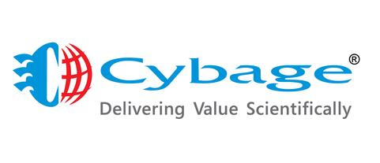

Cybage is an emerging global leader in the Digital Product Engineering Services space. We have a strong track record of over 25 years in offering the most comprehensive and prudent digital product engineering services to technology-led businesses around the globe. Our award-winning services cover the entire spectrum of a software or technology product life cycle (PLC) and the product revamp.
CYBAGE OVERVIEW
Cybage is an emerging global leader in the Digital Product Engineering Services space. We have a strong track record of over 25 years in offering the most comprehensive and prudent digital product engineering services to technology-led businesses around the globe. Our award-winning services cover the entire spectrum of a software or technology product life cycle (PLC) and the product revamp.
One of the most exciting facets of our service offerings is that we deliver theseservices under the aegis of our proprietary DecisionMines™ platform. DecisionMines™ empowers our entire delivery ecosystem to internalize
Industries
Cervices
Centre ofExcellence
Insights
Corporate Governance
Introduction To Corporate Governance in India
Complete transparency in the governance of any corporate entity is vital for its stability, growth, and profitability. With growing competition in the local and global markets, the need for good corporate governance has intensified. To keep processes progressive and transparent in India, the Ministry of Corporate Affairs (MCA) and the Securities and Exchange Board of India have set up an organizational framework for corporate governance. The Indian Companies Act of 2013 introduced processes that would benefit the directors, management, and the companies' stakeholders. These regulations ensure strict compliance and application of legal practices in a continuously changing economic environment.
These policies and practices are directed through Clause 49 of the Listing Agreement of stock exchanges with companies. This clause makes its compulsory for all the listed companies to act in accordance with it. MCA has appointed a number of committees and forums to facilitate a smooth exchange of ideas between corporate leaders, policymakers, regulators, law enforcers, and NGOs.